Adapting generative foundation models, in particular diffusion and flow models, to optimize given reward functions (e.g. binding affinity) while satisfying constraints (e.g. molecular synthesizability) is fundamental for their adoption in real-world scientific discovery applications such as molecular design or protein engineering. While recent works have introduced scalable methods for reward-guided fine-tuning of such models via reinforcement learning and control schemes, it remains an open problem how to algorithmically trade-off reward maximization and constraint satisfaction in a reliable and predictable manner. Motivated by this challenge, we first present a rigorous framework for Constrained Generative Optimization, which brings an optimization viewpoint to the introduced adaptation problem and retrieves the relevant task of constrained generation as a sub-case. Then, we introduce Constrained Flow Optimization (CFO), an algorithm that automatically and provably balances reward maximization and constraint satisfaction by reducing the original problem to sequential fine-tuning via established, scalable methods. We provide convergence guarantees for constrained generative optimization and constrained generation via CFO. Ultimately, we present an experimental evaluation of CFO on both synthetic, yet illustrative, settings, and a molecular design task. Across these evaluations, CFO achieves consistent increases in reward while ensuring high constraint satisfaction, showcasing its practical utility for constrained generative optimization.
Given a pre-trained flow (or diffusion) model with terminal distribution $\ppre_1$ over a space $\Xcal$, a scalar reward $r : \Xcal \to \mathbb{R}$, and a scalar constraint $c : \Xcal \to \mathbb{R}$ with bound $B \in \mathbb{R}$, we look for a fine-tuned policy $\pi$ whose induced distribution $p^\pi_1$ solves:
The formulation is fully agnostic: no differentiability of $r$ or $c$ is required at the problem level. Setting $r \equiv 0$ recovers the classical task of constrained generation; for non-trivial $r$ it becomes a constrained optimization problem on top of a pre-trained generative model.
A natural first attempt is the fixed-weight Lagrangian $\Lcal_\mu(\pi) = \Esymb[r(x)] - \alpha\,\DKL(p^\pi_1\|\ppre_1) - \mu\,\big(\Esymb[c(x)] - B\big)$ with $\mu \ge 0$. This fails in practice for three reasons:
CFO removes these failure modes by adaptively updating both a Lagrange multiplier and a penalty.
CFO solves the constrained problem above as a sequence of unconstrained, entropy-regularized fine-tuning subproblems via an augmented Lagrangian scheme. Intuitively, CFO embeds the constraint into an augmented reward via two adaptive dual variables — the penalty $\rho_k$ and the Lagrange multiplier $\lambda_k$ — and at every outer iteration steps a standard fine-tuning solver (e.g. Adjoint Matching, DiffusionNFT, Flow-GRPO) toward feasibility while improving reward.
We form $f_k = r - \tfrac{\rho_k}{2}[\max(0,\, c - B - \lambda_k/\rho_k)]^{2}$: the task reward minus a shifted, quadratic constraint penalty. The non-negative shift $-\lambda_k/\rho_k$ moves the penalty threshold toward the current expected constraint, so moderate penalties suffice and inner subproblems stay well-conditioned.
Any off-the-shelf entropy-regularized fine-tuning oracle maximizes the augmented reward: $\pi_k \in \arg\max_\pi\, \Esymb_{x\sim p^\pi_1}[f_k(x)] - \alpha\,\DKL(p^\pi_1\|\ppre_1)$. In our experiments we instantiate the oracle with Adjoint Matching, and demonstrate that CFO is solver-agnostic by also plugging in the gradient-free DiffusionNFT.
With samples from $p^{\pi_k}_1$ we estimate the constraint gap $G_k = \Esymb[c(x)] - B$ and a contraction statistic $V_k = \min\{G_k,\, -\lambda_k/\rho_k\}$ that measures whether the iterate is genuinely tightening on feasibility (rather than artificially relaxing via a large shift).
The Lagrange multiplier is updated by a projected step $\lambda_{k+1} = \Pi_{[\lambda_{\min},\,0]}(\lambda_k - \rho_k G_k)$. If the constraint is violated ($G_k > 0$), $\lambda_{k+1}$ becomes more negative and the penalty sharpens. If the constraint is satisfied ($G_k < 0$), $\lambda_{k+1}$ relaxes toward $0$ — reward gets more weight.
We grow $\rho$ only when needed: if $V_k$ fails to contract by a factor $\tau$, the penalty is scaled by $\eta > 1$; otherwise it is held fixed. This avoids unnecessary stiffness while guaranteeing the penalty is eventually large enough to enforce feasibility.
Under a mild approximate-solver assumption on the inner oracle, the iterates produced by CFO inherit classical augmented-Lagrangian guarantees:
Critically, the formulation requires no differentiability of the reward or constraint at the problem level — any such requirements are inherited only from the chosen inner solver. This means CFO directly composes with gradient-free fine-tuners such as DiffusionNFT or Flow-GRPO.
On a 2-D mixture of Gaussians with a reward (distance to the white target) and a hard constraint (samples must lie inside the red triangles), CFO concentrates mass in the feasible regions while moving toward higher reward. Adjoint Matching alone improves reward but violates the constraint.
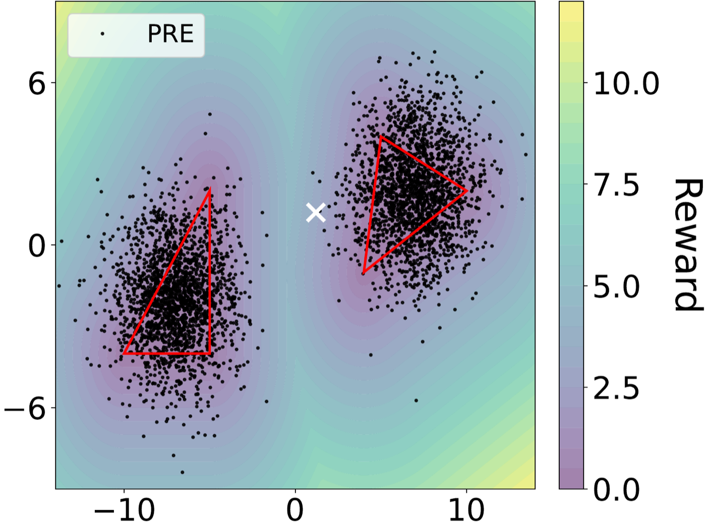
Pre-trained
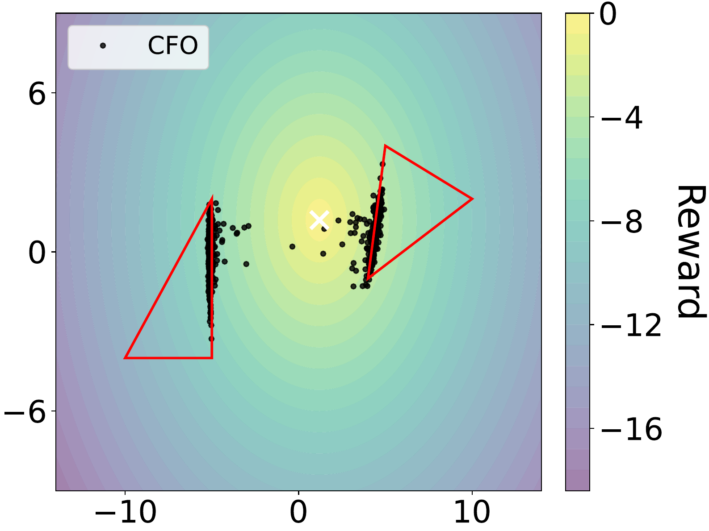
CFO (ours)
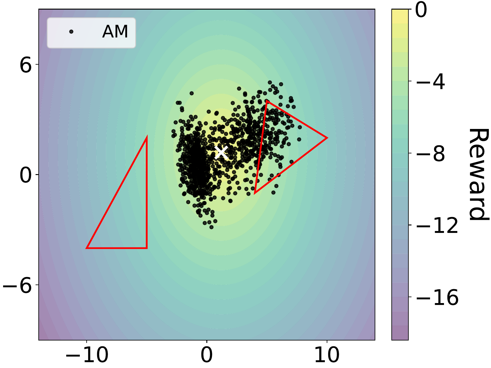
Adjoint Matching
Setting $r \equiv \text{const}$ recovers classical constrained generation. By varying the constraint bound $B$, CFO smoothly controls how strictly the resulting flow model respects the constraint region (red triangle) — a single dial for the feasibility/coverage trade-off.
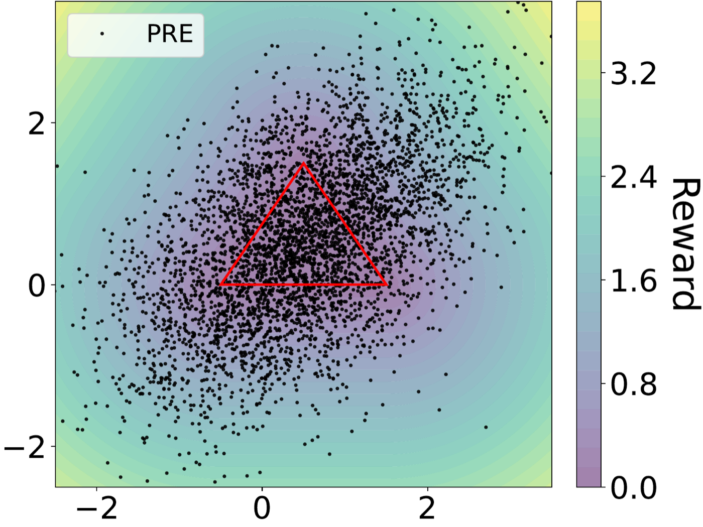
Pre-trained
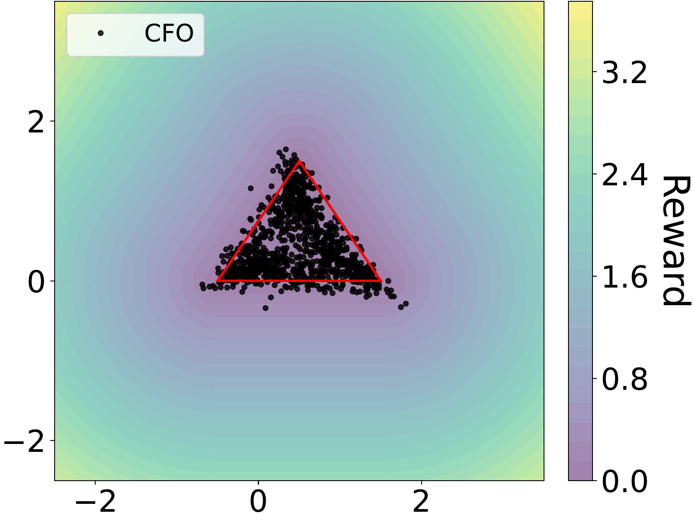
CFO with $B = 0$
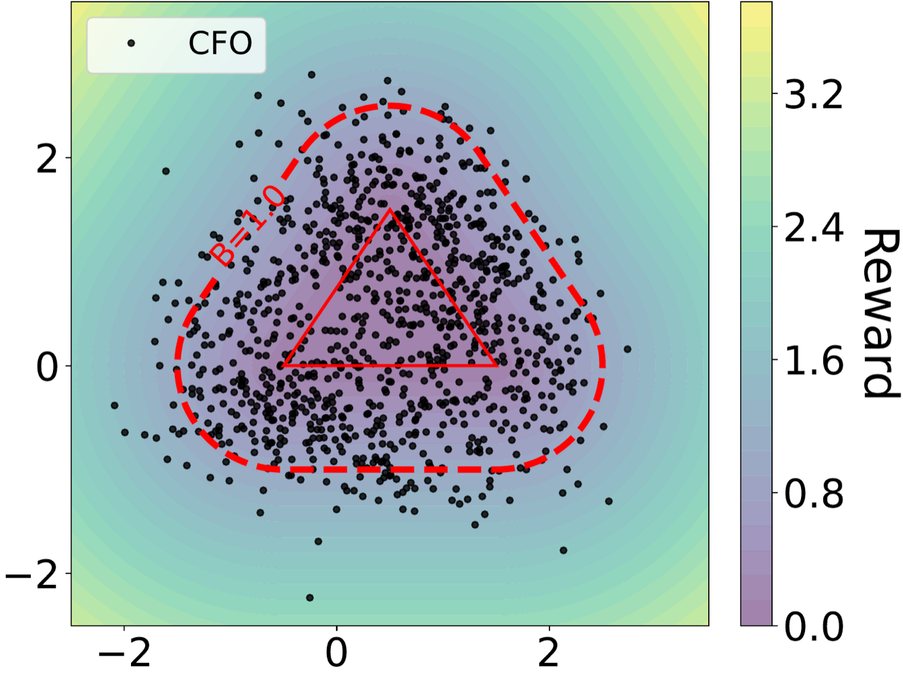
CFO with $B = 1$
Applied to FlowMol pre-trained on GEOM-Drugs, CFO maximizes the molecular dipole moment (reward) while keeping the total xTB energy inside an $-80$ Ha bound (constraint). CFO matches the dipole of unconstrained Adjoint Matching but, unlike it, satisfies the energy constraint throughout the run.
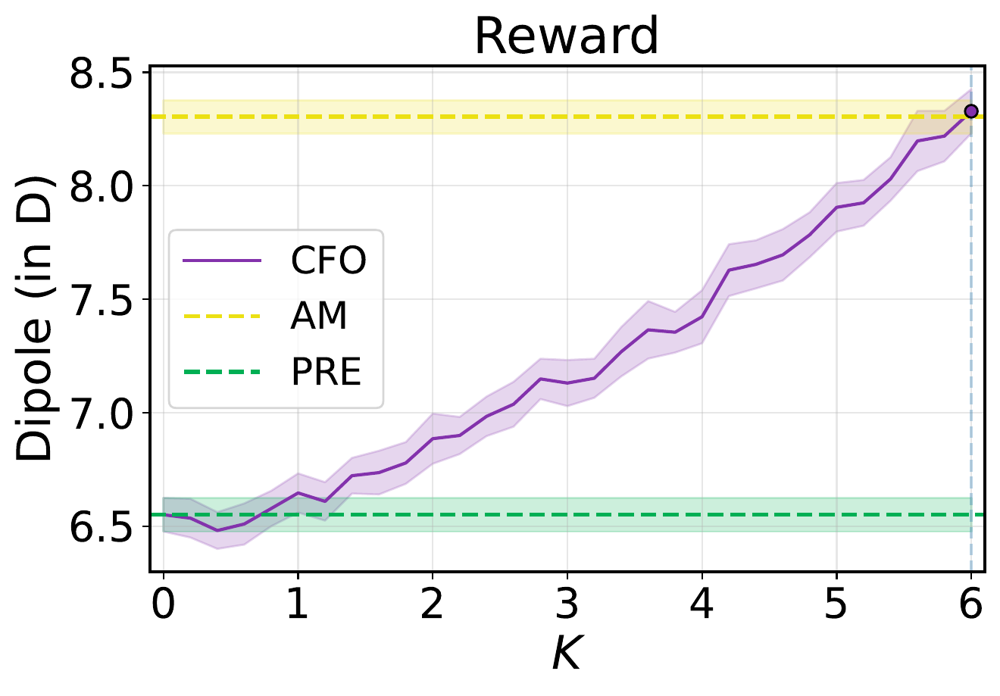
Reward (dipole, D)
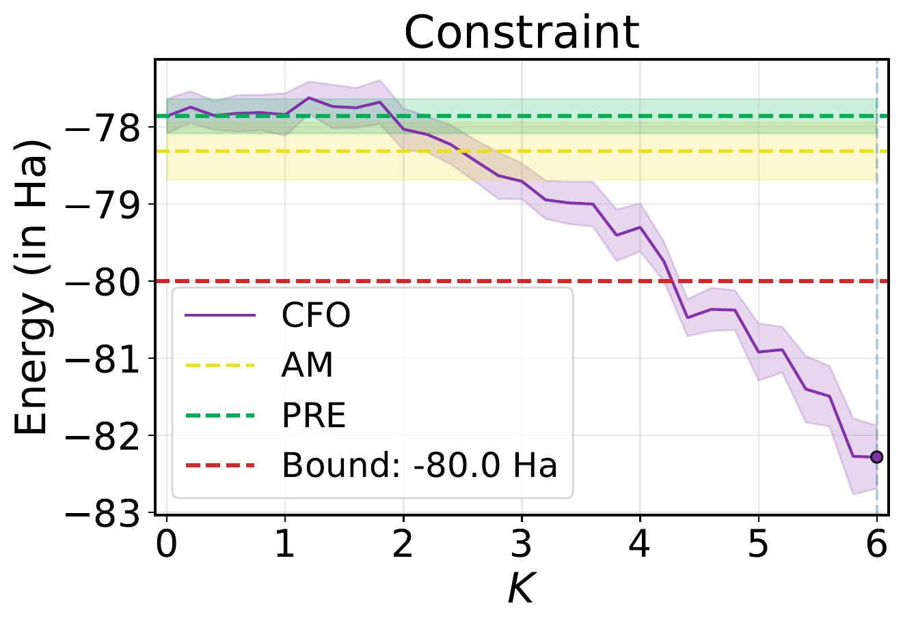
Constraint (energy, Ha)
Drug-like samples generated by the CFO-fine-tuned model, annotated with ground-truth dipole and energy.
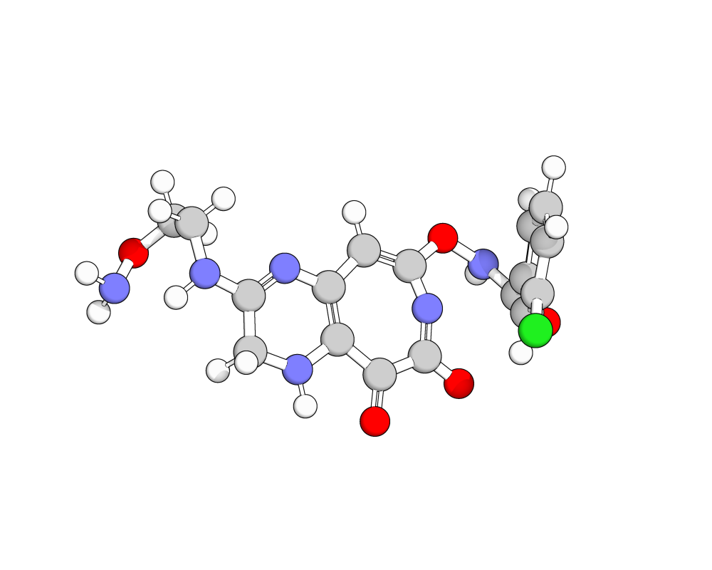
$15.7$ D / $-86.9$ Ha
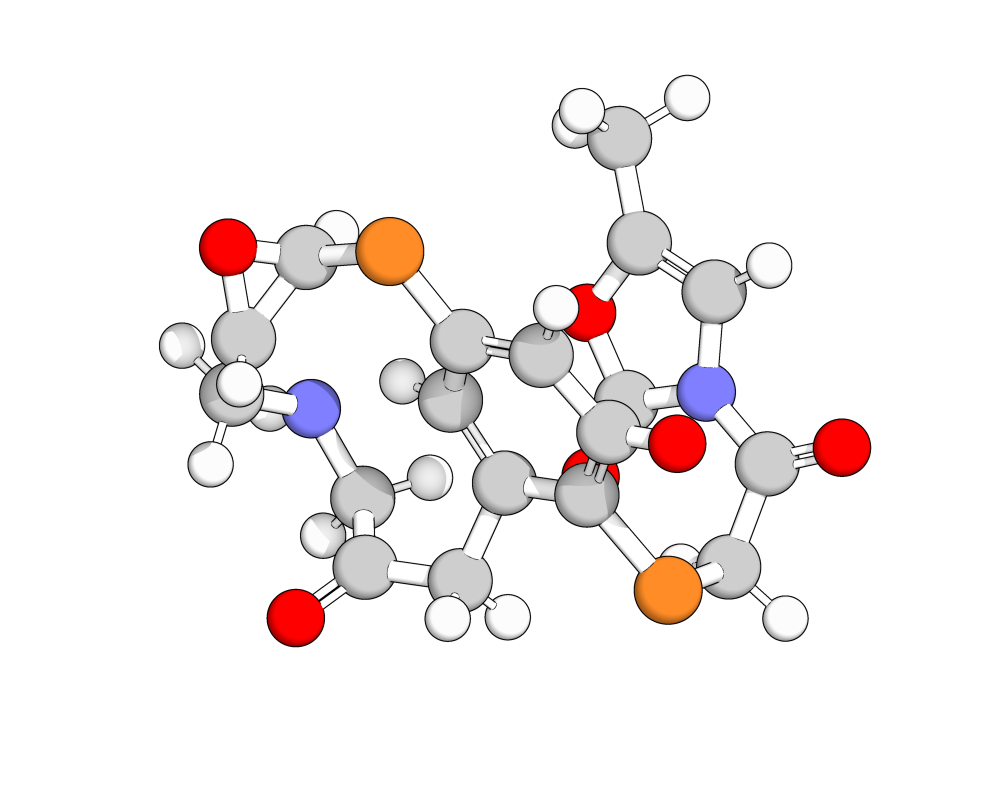
$9.1$ D / $-83.4$ Ha
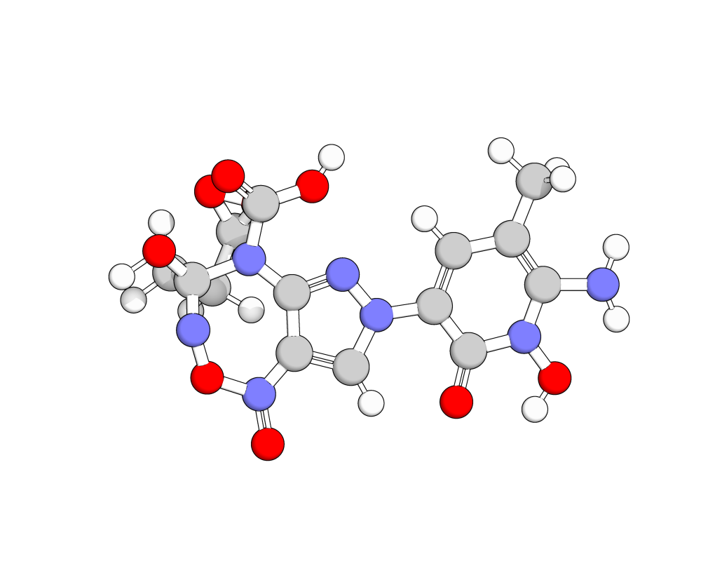
$12.5$ D / $-93.8$ Ha
Compared against 18 fixed-$\mu$ Adjoint-Matching baselines (sweeping $\mu \in [10^{-6}, 10^{6}]$), only two baselines simultaneously reach CFO-level dipole and satisfy the energy constraint. Manual tuning is both expensive and unreliable — CFO finds the right operating point automatically.
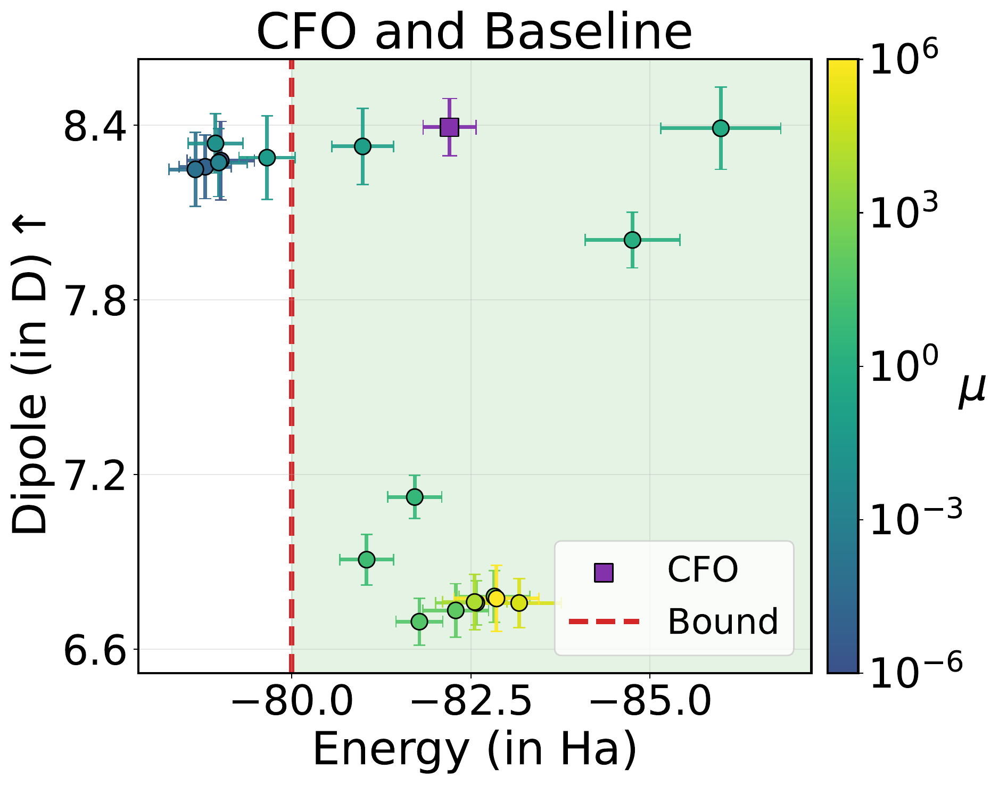
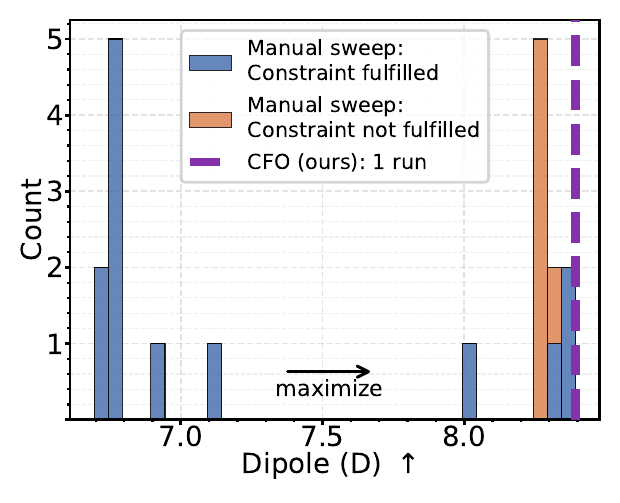
@inproceedings{gutjahr2026constrained,
title = {Constrained Flow Optimization via Sequential Fine-Tuning for Molecular Design},
author = {Gutjahr, Sven and De Santi, Riccardo and Schaufelberger, Luca and Jorner, Kjell and Krause, Andreas},
booktitle = {Proceedings of the 43rd International Conference on Machine Learning},
year = {2026}
}